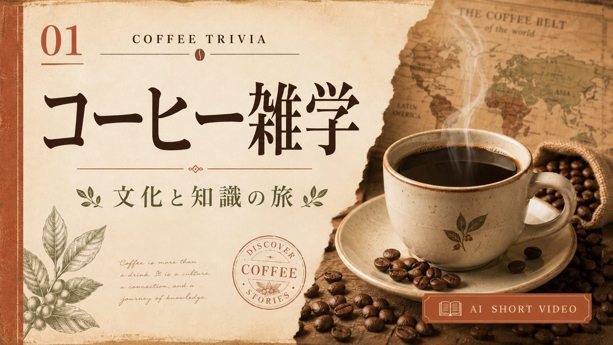
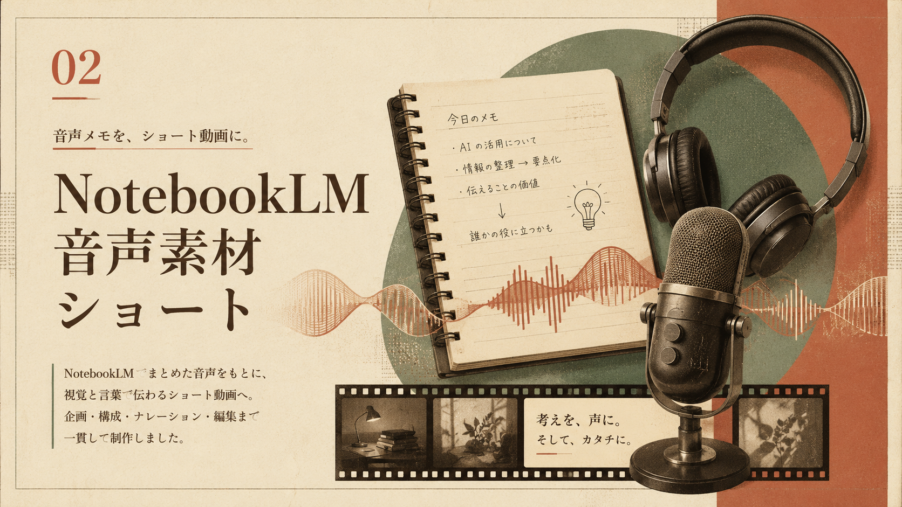
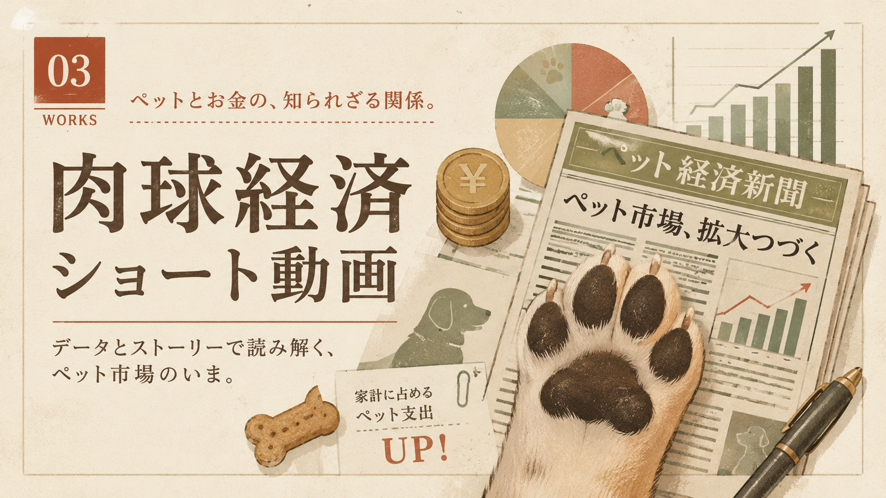
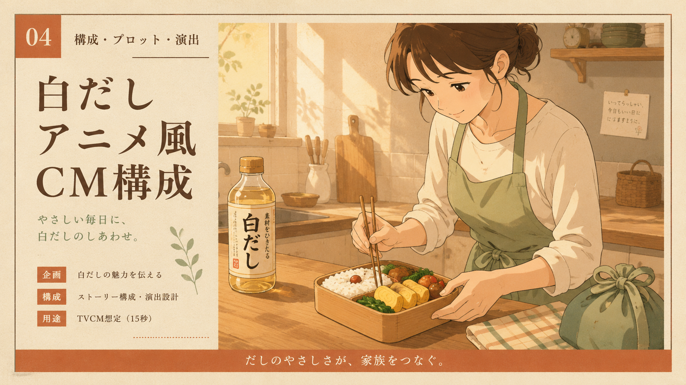
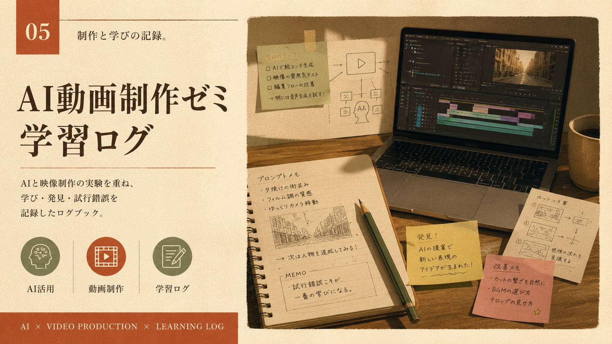

Profile
プロフィール
観察者ノート
AI動画制作を学びながら、企画・構成・生成AIの活用・動画編集・投稿までの流れを少しずつ実践しています。 まだ学習中ですが、日々の試行錯誤や気づきを記録しながら、ショート動画や解説コンテンツを制作しています。 成果物だけでなく、制作の課程や改善点も大切にしながら、自分らしい表現を育てていきたいです。 制作スタンス ・完成度より、まず形にすることを大切にする ・成果物だけでなく、学びの課程も記録する ・AIツールを組み合わせて、自分にある制作フローを探す ・日常の観察や気づきを、動画や文章のテーマに変換する ・少しずつ改善しながら、自分らしいポートフォリオを育て
Works
作品一覧
AI動画制作の学習過程で作った作品や、これから形にしていきたいテーマをまとめています。 完成品だけでなく、企画・構成・編集の試行錯誤も大切にしています。




Study Notes
学習記録
プロンプトは「画角・動き・質感」を分けて書く
一文に詰め込むより、カメラ、被写体、雰囲気を整理すると再現性が上がりました。
短尺動画は最初の2秒で意図を伝える
タイトル、明るい画、動きのある要素を冒頭に置くと、見始めの印象が強くなります。
生成素材は編集前提で余白を作る
テロップやロゴの配置場所を考えて生成すると、後工程の調整がスムーズでした。
Tools
使用ツール一覧
- ChatGPT
- NotebookLM
- CapCut
- Premiere Pro
- Kling
- Codex
Contact
Instagramで制作ログを見る
日々の作品だけでなく、AIニュース、社会の変化。気になったテーマを観察しながら、点と点をつなぐシンセサイザー実験ログをInstagramで更新しています。
Instagramで見る